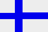

|
Länderinformationen Finnland
1. Das Wichtigste auf einen Blick2. Sehens- und Hörenswertes
3. Politik & Gesellschaft
4. Schmeckenswertes
5. Medien
6. Reisetipps
1. Wissenswertes
|  | Hier haben wir die wichtigsten Zahlen und Fakten zu Finnland und
der dort gesprochenen Sprache zusammengetragen. |
 Die finnische Sprache
Die finnische Sprache
Auf die Frage „Puhutko
suomea?“ - „Sprichst du Finnisch?“ werden Ihnen
rund 4,7 Millionen Menschen mit „Kyllä.“ - „Ja.“
antworten. In Finnland sprechen ca. 4,1 Millionen Einwohner bzw. 92
Prozent der Bevölkerung Finnisch als Muttersprache. In Schweden
gilt Finnisch als amtliche Minoritätenssprache und wird von ca.
300.000 Menschen gesprochen. Außerdem gibt es kleine
finnischsprachige Minderheiten in Nordnorwegen, Karelien und Estland.
Die finnische Sprache ist ein Mitglied der finno-ugrischen Sprachfamilie. Andere finno-ugrischen Sprachen sind zum Beispiel Ungarisch und Estnisch. Die finno-ugrischen Sprachen sind agglutierende Sprachen und unterscheiden sich stark von den indogermanischen Sprachen, zu denen zum Beispiel Deutsch oder Englisch gehören.
Bei agglutinierenden Sprachen werden grammatische Funktionen durch das Anhängen von Affixen (Wortsilben) ausgedrückt. Ein anderer Unterschied zum Deutschen ist die große Anzahl von Fällen im Finnischen. Aus dem Deutschen kennen Sie vier Fälle: Nominativ, Genitiv, Dativ und Akkusativ. Im Finnischen werden fünfzehn Fälle unterschieden. Das ist bestimmt einer der Gründe, warum das Finnischlernen auf den ersten Blick vielleicht schwer fällt.
Probleme für den Lerner kann auch die Tatsache verursachen, dass die finnische Sprache keine bzw. nur wenige Überschneidungen im Wortschatz mit den germanischen und romanischen Sprachen hat. Sie müssen die neuen Vokabeln also wirklich lernen und können sich nur selten Eselsbrücken zu Ihnen bekanntem Wortschatz bauen. Außerdem kann es frustrierend sein, dass die finnische Umgangssprache sich sehr stark vom Standardfinnischen unterscheidet. Die Standardsprache des Finnischen wird hauptsächlich in der Politik und den Nachrichten verwendet.
Wenn Sie aber Standardfinnisch können und das werden Sie in diesem Kurs lernen, wird man Sie überall in Finnland ohne Probleme verstehen. Dialekten
Es gibt in Finnland zwei Hauptdialekte: das
östliche und das westliche Finnisch. Zusätzlich gibt es
aber innerhalb von diesen beiden Hauptgruppen eine Vielzahl von
kleineren und lokalen Dialekten, die aber meistens leicht von anderen
verstanden werden. Der wichtigste
Unterschied zwischen den westlichen und östlichen Dialekten ist
die Entsprechung des Buchstabens „d“. In den
westfinnischen Dialekten wird das /d/ oft durch /r/ oder /l/ ersetzt
(zum Beispiel juora statt juoda). In den ostfinnischen Dialekten
fällt das /d/ ganz aus (zum Beispiel puota statt pudota).
Nun aber
zu Finnland. Hier finden Sie zuerst das wichtigste zu Finnisch als
Landessprache in Finnland. Im Anschluss daran wollen wir Ihnen einen
Überblick über die wichtigsten Fakten und viele
landestypische Informationen geben:
 Landessprache(n)
Landessprache(n)
Die
offiziellen Landessprachen in Finnland sind Finnisch und Schwedisch.
Bis zum Jahr 1806 war Finnland ein Teil des schwedischen Königreichs
und seitdem spielt das Schwedische eine große Rolle in der
finnischen Gesellschaft. Finnisch als Muttersprache sprechen circa 92
Prozent der Bevölkerung und Schwedisch etwa 5,5 Prozent. Die
26.000 Einwohner auf Insel Åland verwenden Schwedisch als
einzige Umgangs- und Amtssprache.
Wenn
Sie also auf Åland Urlaub
machen wollen, finden Sie unseren Schwedisch-Expresskurs auf dieser
Internetseite:
www.sprachenlernen24.de
Sami, die Sprache der Lappen, hat einen Status als
offizielle Minoritätensprache. Sie
wird
von etwa 20 000 Menschen im
finnischen,
schwedischen und norwegischen Lappland gesprochen. Sami gehört
zur Gruppe der finno-ugrischen Sprachen und wird in neun samische
Sprachen oder Dialekten unterteilt. Sechs von diesen
haben eine eigene Schriftschprache. Von allen
Sami-Sprachen ist Nord-Sami am weitesten verbreitet und wird auch in
offiziellen Angelegenheiten als Amtsprache verwendet. Im finnischen
Lappland werden drei Sami-Sprachen gesprochen: Nord-Sami, Skolt-Sami
und Inari-Sami.
 Einwohner
Einwohner
In
Finnland leben etwa 5,3 Menschen (zum Vergleich: in der
Bundesrepublik Deutschland leben 82,4 Millionen Menschen, in
Österreich 8,2 Millionen und in der Schweiz 7,2 Millionen).
Ethnisch gesehen ist Finnland sehr einheitlich. Der Ausländeranteil
liegt nur bei 2 Prozent und das ist einer der niedrigsten in ganz
Europa. Die Russen und Schweden bilden die größte Gruppe
ausländischer Staatsbürger.
Die
Lebenserwartung der finnischen Männer liegt bei 75 Jahren und
die der Frauen bei 82 Jahren. Zum
Vergleich: in der Bundesrepublik Deutschland liegt die
Lebenserwartung bei 76 (Männer) bzw. 82 (Frauen) Jahren, in der
Schweiz bei 78 bzw.83 Jahren und in Österreich bei 76 bzw.82
Jahren.
 Fläche
Fläche
Finnland
ist flächenmäßig das sechst größte Land
Europas und sein Staatsgebiet umfasst eine Fläche von 337.030
km². Damit ist Finnland ein bisschen kleiner als Deutschland.
Finnland ist eines der nördlichsten Länder der Erde und
grenzt an Schweden, Norwegen, Russland und an die Ostsee.
Wenn Sie sich jetzt einmal auf einer
Landkarte Finnland suchen, werden Sie sehen, dass die Landmasse
Finnlands, mit etwas Fantasie an eine vollschlanke Frau erinnert. Auf
Finnisch würde man „Suomi neito – die Jungfrau
Finnland“ sagen. Diese junge Frau mit blauen Augen und blonden
Haaren ist die Personifikation Finnlands und dieses Symbol ist in
Finnland überall zu finden.
Es gibt
keine großen Gebirge in Finnland aber im Norden befinden sich
die sogenannten Inselberge (Tunturit). Der „Haltitunturi“
(1 324 m), der etwa 300 Kilometer nördlich des Polarkreises
liegt, ist die höchste Erhebung im ganzen Land.
Die
Bevölkerungsdichte in Finnland beträgt nur rund 15
Einwohner pro Quadratkilometer. Zum Vergleich: Die Bevölkerungsdichte
in der Bundesrepublik Deutschland beträgt 231 Einwohner pro
Quadratkilometer. Dünn besiedelte Regionen gibt es vor allem in
Nord – und Ostfinnland. Dort beträgt die
Bevölkerungsdichte teilweise nur zwei bis vier Einwohner pro
Quadratkilometer.
 Währung
Währung
In
Finnland bezahlen Sie mit dem Euro. 1 Euro wird in 100 Cent
unterteilt. Im Gegensatz zu anderen EU-Ländern, ist die kleinste
im Umlauf befindliche Münze in Finnland das 5-Cent Stück.
Sie werden keine 1- oder 2-Cent-Münzen finden. Beim Bezahlen
werden alle Rechnungen auf die nächsten fünf Cent auf- oder
abgerundet.
 Zeitzone
Zeitzone
UTC +2
Erklärung:
Die Bezeichung "UTC"
(Universal
Time, Coordinated) steht
für die "koordinierte Weltzeit". In dieses System ist
die aktuelle Weltzeit eingeteilt. Früher wurden die
unterschiedlichen Zeitzonen der Welt in der GMT (Greenwich Mean Time)
gemessen. Diese Einteilung wurde aber von oben genannter UTC-Messung
abgelöst.
Zu Ihrer
Orientierung: Deutschland, Österreich und die Schweiz liegen
innerhalb der gleichen Zeitzone. Hier gilt die "Central European
Time" (die mitteleuropäische Zeit). Ausgedrückt im
UTC-System heißt das: UTC +1 (während der Sommerzeit ist
es UTC +2). Genauso wie in Deutschland, Österreich und in der
Schweiz, findet in Finnland eine Umstellung auf die Sommerzeit statt.
 Wirtschaft
Wirtschaft
Finnland
ist zu 66 Prozent Waldland und die Wälder sind deswegen die
wichtigste Rohstoffressource Finnlands. Die Erzeugnisse der
Holzwirtschaft stellen bis zu 40 Prozent der finnischen Exportgüter.
Aber schon seit längerer Zeit sind Maschinenbau und High-Tech
die wichtigsten Industriezweige geworden. Das wichtigste einzelne
Exportprodukt ist das Mobiltelefon. Das
größte und wichtigste Unternehmen ist der
Elektronikkonzern
Nokia.
Im
nächsten Kapitel haben wir einige ausgesuchte Reiseempfehlungen
zusammengestellt.
| Wissenswertes |
Es gibt in Finnland zwei Hauptdialekte: das östliche und das westliche Finnisch. Zusätzlich gibt es aber innerhalb von diesen beiden Hauptgruppen eine Vielzahl von kleineren und lokalen Dialekten, die aber meistens leicht von anderen verstanden werden. Der wichtigste Unterschied zwischen den westlichen und östlichen Dialekten ist die Entsprechung des Buchstabens „d“. In den westfinnischen Dialekten wird das /d/ oft durch /r/ oder /l/ ersetzt (zum Beispiel juora statt juoda). In den ostfinnischen Dialekten fällt das /d/ ganz aus (zum Beispiel puota statt pudota).
Nun aber zu Finnland. Hier finden Sie zuerst das wichtigste zu Finnisch als Landessprache in Finnland. Im Anschluss daran wollen wir Ihnen einen Überblick über die wichtigsten Fakten und viele landestypische Informationen geben:
Landessprache(n)
Die offiziellen Landessprachen in Finnland sind Finnisch und Schwedisch. Bis zum Jahr 1806 war Finnland ein Teil des schwedischen Königreichs und seitdem spielt das Schwedische eine große Rolle in der finnischen Gesellschaft. Finnisch als Muttersprache sprechen circa 92 Prozent der Bevölkerung und Schwedisch etwa 5,5 Prozent. Die 26.000 Einwohner auf Insel Åland verwenden Schwedisch als einzige Umgangs- und Amtssprache.
Wenn Sie also auf Åland Urlaub machen wollen, finden Sie unseren Schwedisch-Expresskurs auf dieser Internetseite: www.sprachenlernen24.de
Sami, die Sprache der Lappen, hat einen Status als offizielle Minoritätensprache. Sie wird von etwa 20 000 Menschen im finnischen, schwedischen und norwegischen Lappland gesprochen. Sami gehört zur Gruppe der finno-ugrischen Sprachen und wird in neun samische Sprachen oder Dialekten unterteilt. Sechs von diesen haben eine eigene Schriftschprache. Von allen Sami-Sprachen ist Nord-Sami am weitesten verbreitet und wird auch in offiziellen Angelegenheiten als Amtsprache verwendet. Im finnischen Lappland werden drei Sami-Sprachen gesprochen: Nord-Sami, Skolt-Sami und Inari-Sami. Einwohner
In Finnland leben etwa 5,3 Menschen (zum Vergleich: in der Bundesrepublik Deutschland leben 82,4 Millionen Menschen, in Österreich 8,2 Millionen und in der Schweiz 7,2 Millionen). Ethnisch gesehen ist Finnland sehr einheitlich. Der Ausländeranteil liegt nur bei 2 Prozent und das ist einer der niedrigsten in ganz Europa. Die Russen und Schweden bilden die größte Gruppe ausländischer Staatsbürger.
Die Lebenserwartung der finnischen Männer liegt bei 75 Jahren und die der Frauen bei 82 Jahren. Zum Vergleich: in der Bundesrepublik Deutschland liegt die Lebenserwartung bei 76 (Männer) bzw. 82 (Frauen) Jahren, in der Schweiz bei 78 bzw.83 Jahren und in Österreich bei 76 bzw.82 Jahren.
Fläche
Finnland ist flächenmäßig das sechst größte Land Europas und sein Staatsgebiet umfasst eine Fläche von 337.030 km². Damit ist Finnland ein bisschen kleiner als Deutschland. Finnland ist eines der nördlichsten Länder der Erde und grenzt an Schweden, Norwegen, Russland und an die Ostsee.
Wenn Sie sich jetzt einmal auf einer Landkarte Finnland suchen, werden Sie sehen, dass die Landmasse Finnlands, mit etwas Fantasie an eine vollschlanke Frau erinnert. Auf Finnisch würde man „Suomi neito – die Jungfrau Finnland“ sagen. Diese junge Frau mit blauen Augen und blonden Haaren ist die Personifikation Finnlands und dieses Symbol ist in Finnland überall zu finden.
Es gibt keine großen Gebirge in Finnland aber im Norden befinden sich die sogenannten Inselberge (Tunturit). Der „Haltitunturi“ (1 324 m), der etwa 300 Kilometer nördlich des Polarkreises liegt, ist die höchste Erhebung im ganzen Land.
Die Bevölkerungsdichte in Finnland beträgt nur rund 15 Einwohner pro Quadratkilometer. Zum Vergleich: Die Bevölkerungsdichte in der Bundesrepublik Deutschland beträgt 231 Einwohner pro Quadratkilometer. Dünn besiedelte Regionen gibt es vor allem in Nord – und Ostfinnland. Dort beträgt die Bevölkerungsdichte teilweise nur zwei bis vier Einwohner pro Quadratkilometer.
Währung
In Finnland bezahlen Sie mit dem Euro. 1 Euro wird in 100 Cent unterteilt. Im Gegensatz zu anderen EU-Ländern, ist die kleinste im Umlauf befindliche Münze in Finnland das 5-Cent Stück. Sie werden keine 1- oder 2-Cent-Münzen finden. Beim Bezahlen werden alle Rechnungen auf die nächsten fünf Cent auf- oder abgerundet.
Zeitzone
UTC +2
Erklärung: Die Bezeichung "UTC" (Universal Time, Coordinated) steht für die "koordinierte Weltzeit". In dieses System ist die aktuelle Weltzeit eingeteilt. Früher wurden die unterschiedlichen Zeitzonen der Welt in der GMT (Greenwich Mean Time) gemessen. Diese Einteilung wurde aber von oben genannter UTC-Messung abgelöst.
Zu Ihrer Orientierung: Deutschland, Österreich und die Schweiz liegen innerhalb der gleichen Zeitzone. Hier gilt die "Central European Time" (die mitteleuropäische Zeit). Ausgedrückt im UTC-System heißt das: UTC +1 (während der Sommerzeit ist es UTC +2). Genauso wie in Deutschland, Österreich und in der Schweiz, findet in Finnland eine Umstellung auf die Sommerzeit statt.
Wirtschaft
Finnland ist zu 66 Prozent Waldland und die Wälder sind deswegen die wichtigste Rohstoffressource Finnlands. Die Erzeugnisse der Holzwirtschaft stellen bis zu 40 Prozent der finnischen Exportgüter. Aber schon seit längerer Zeit sind Maschinenbau und High-Tech die wichtigsten Industriezweige geworden. Das wichtigste einzelne Exportprodukt ist das Mobiltelefon. Das größte und wichtigste Unternehmen ist der Elektronikkonzern Nokia.
Im nächsten Kapitel haben wir einige ausgesuchte Reiseempfehlungen zusammengestellt.